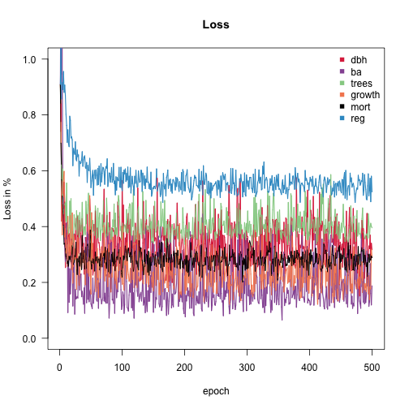
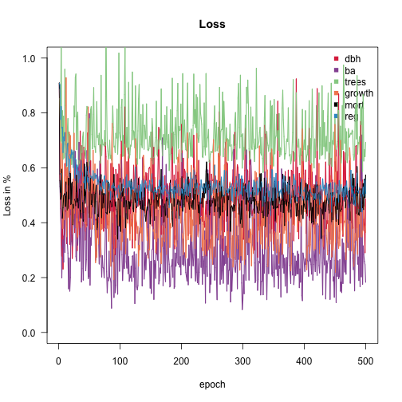
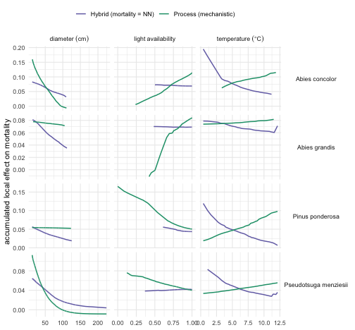

Mortality: a binomial response and a neural-network process
Source:vignettes/E-Mortality.Rmd
E-Mortality.RmdMortality is the hardest of FINN’s six responses to calibrate, and the one where the choice of likelihood matters most. This vignette takes it on its own terms: what the observation actually is, which likelihood belongs to it, how to swap the process for a neural network, and — the part that is easy to get wrong — how to score the result.
It follows the same 200-fit / 200-holdout FIA sample as
Fitting FINN to forest inventory data, and like that
page it is precompiled by
vignettes/build.R: the models below are really trained.
Mortality is a proportion, not a rate
makeObsData() returns mortality as a pair of
counts rather than a bare rate:
-
n_at_risk— trees alive at the start of an inventory interval, -
n_died— how many of those were dead at the end,
with mort = n_died / n_at_risk derived for convenience.
This is exactly the cbind(died, survived) response of a
binomial GLM, and it is deliberate. A bare proportion throws away the
sample size: it cannot tell a site where 1 of 1 trees died from one
where 60 of 60 did, even though the second carries sixty times the
information.
The pair is a closed cohort — both columns are
pinned to the tree’s state at the start of the interval. That matters
more than it sounds. FIA re-identifies a tree’s species between visits,
so a rate built by dividing “deaths this year” by “survivors last year”
can book a death against the species a tree ended as while the
denominator counted the species it started as, and report more
deaths than there were trees. Pinning both columns to the interval start
makes n_died <= n_at_risk true by construction. (Trees
that recruit during the interval are in neither column; see
?makeObsData for the open-cohort alternative.)
ext <- function(f) system.file("extdata", f, package = "FINN")
obs_dt <- fread(ext("fia_obs_dt.csv"))
env_dt <- fread(ext("fia_env_dt.csv"))
init_trees <- fread(ext("fia_init_trees.csv"))
species_dt <- fread(ext("fia_species_dt.csv"))
obs_test <- fread(ext("fia_obs_test.csv"))
env_test <- fread(ext("fia_env_test.csv"))
init_test <- fread(ext("fia_init_test.csv"))
obs_dt[, .(siteID, year, species_name, n_at_risk, n_died, mort)][n_at_risk > 0][1:6]
#> siteID year species_name n_at_risk n_died mort
#> <int> <int> <char> <int> <int> <num>
#> 1: 1 1 Pseudotsuga menziesii 2 0 0.0000000
#> 2: 1 1 Abies grandis 6 0 0.0000000
#> 3: 1 1 other 3 1 0.3333333
#> 4: 1 2 Pseudotsuga menziesii 2 0 0.0000000
#> 5: 1 2 Abies grandis 10 0 0.0000000
#> 6: 1 2 other 2 0 0.0000000How much mortality signal is actually in this sample? Less than the number of rows suggests:
cat(sprintf("observations with a cohort at risk : %d\n", obs_dt[n_at_risk > 0, .N]))
#> observations with a cohort at risk : 1003
cat(sprintf("of which mort is exactly zero : %d (%.0f%%)\n",
obs_dt[n_at_risk > 0 & n_died == 0, .N],
100 * obs_dt[n_at_risk > 0, mean(n_died == 0)]))
#> of which mort is exactly zero : 688 (69%)
cat(sprintf("trees at risk (train) : %d\n", obs_dt[, sum(n_at_risk)]))
#> trees at risk (train) : 9907
cat(sprintf("deaths (train) : %d\n", obs_dt[, sum(n_died)]))
#> deaths (train) : 656
cat(sprintf("pooled mortality rate : %.3f per inventory interval\n",
obs_dt[, sum(n_died) / sum(n_at_risk)]))
#> pooled mortality rate : 0.066 per inventory intervalA few hundred deaths, and roughly two-thirds of the observations at exactly zero. No likelihood can manufacture information that is not there — but the wrong one can waste what is.
Why binomial and not mse
FINN scores mortality with
loss = c(..., mortality = "binomial", ...) by default.
Squared error assumes an unbounded response with constant variance;
mortality is neither. A proportion lives on
and its variance shrinks as the rate approaches either end — so
on a response that is ~69% zeros, MSE puts almost no gradient where the
data actually are.
The binomial term is weighted by n_at_risk, which is
what turns a Bernoulli term into a binomial one. It is the same thing R
does with
glm(prop ~ ., family = binomial, weights = n).
Two models: mechanistic mortality, and mortality as a network
Nsp <- uniqueN(obs_dt$species)
init_cohorts <- makeInitCohorts(init_trees, Nspecies = Nsp)
init_cohorts_test <- makeInitCohorts(init_test, Nspecies = Nsp)The mechanistic baseline, with all four processes in their functional form:
FINN.seed(42)
m <- finn(
N_species = Nsp,
recruits_dbh = 12.9,
competition_process = createProcess(~0, FINN::competition, optimizeSpecies = TRUE),
growth_process = createProcess(~., FINN::growth, optimizeSpecies = TRUE, optimizeEnv = TRUE),
regeneration_process = createProcess(~., FINN::regeneration, optimizeSpecies = TRUE, optimizeEnv = TRUE),
mortality_process = createProcess(~., FINN::mortality, optimizeSpecies = TRUE, optimizeEnv = TRUE)
)
fit(m,
env = env_dt, data = obs_dt, init_cohort = init_cohorts, device = "cpu",
epochs = EPOCHS, batchsize = 40L, patches = 4, patch_size = 0.06,
lr = 0.01, env_autoscale = TRUE
)
Now the same model with mortality replaced by a neural
network — every other process, and the entire
fit() call, unchanged. createHybrid() is the
only difference:
FINN.seed(42)
m_mort <- finn(
N_species = Nsp,
recruits_dbh = 12.9,
competition_process = createProcess(~0, FINN::competition, optimizeSpecies = TRUE),
growth_process = createProcess(~., FINN::growth, optimizeSpecies = TRUE, optimizeEnv = TRUE),
regeneration_process = createProcess(~., FINN::regeneration, optimizeSpecies = TRUE, optimizeEnv = TRUE),
mortality_process = createHybrid(~., hidden = c(20L, 20L), transformer = FALSE)
)
fit(m_mort,
env = env_dt, data = obs_dt, init_cohort = init_cohorts, device = "cpu",
epochs = EPOCHS, batchsize = 40L, patches = 4, patch_size = 0.06,
lr = 0.01, env_autoscale = TRUE
)
Scoring mortality: why not Spearman
pred_of <- function(model, label, env, init, obs_l, split) {
model$eval()
sim <- predict(model, env = env, init_cohort = init,
patches = 4, patch_size = 0.06, device = "cpu")
merge(obs_l, sim$long$site, by = c("siteID", "year", "species", "variable"
))[, `:=`(model = label, split = split)][]
}
to_long <- function(d) melt(d, id.vars = c("siteID", "year", "species", "species_name"),
measure.vars = "mort", variable.name = "variable", value.name = "obs")
FINN.seed(1)
obs_pred <- rbind(
pred_of(m, "Process (mechanistic)", env_dt, init_cohorts, to_long(obs_dt), "train"),
pred_of(m, "Process (mechanistic)", env_test, init_cohorts_test, to_long(obs_test), "holdout"),
pred_of(m_mort, "Hybrid (mortality = NN)", env_dt, init_cohorts, to_long(obs_dt), "train"),
pred_of(m_mort, "Hybrid (mortality = NN)", env_test, init_cohorts_test, to_long(obs_test), "holdout"))Rank correlation is the natural first reach, and it is a trap here. Two-thirds of the observed proportions are exactly zero, so Spearman spends most of its power ranking ties against each other; a value near zero cannot distinguish “the model learned nothing” from “the metric cannot see what it learned”.
obs_pred[is.finite(obs) & is.finite(value),
.(spearman = round(cor(obs, value, method = "spearman"), 2), n = .N),
by = .(model, split)][order(split, model)]
#> model split spearman n
#> <char> <char> <num> <int>
#> 1: Hybrid (mortality = NN) holdout 0.09 994
#> 2: Process (mechanistic) holdout 0.05 994
#> 3: Hybrid (mortality = NN) train 0.24 1003
#> 4: Process (mechanistic) train 0.23 1003AUC asks the question the binomial actually poses:
does the model give a higher death probability to a tree that died than
to one that survived? Each observation stands for n_at_risk
Bernoulli trials of which n_died are deaths, all sharing
that observation’s predicted probability — so rather than expand the
trials we weight them, with tied predictions taking half credit (the
standard Mann-Whitney treatment).
auc_binom <- function(p, pos, neg) {
g <- data.table(p = p, pos = pos, neg = neg)[
, .(pos = sum(pos), neg = sum(neg)), by = p][order(p)]
neg_below <- cumsum(g$neg) - g$neg # negatives strictly below each p
den <- sum(g$pos) * sum(g$neg)
if (den == 0) return(NA_real_)
sum(g$pos * (neg_below + 0.5 * g$neg)) / den # 0.5 credit for ties
}
counts <- rbind(
obs_dt[, .(siteID, year, species, n_at_risk, n_died, split = "train")],
obs_test[, .(siteID, year, species, n_at_risk, n_died, split = "holdout")])
mort_pred <- merge(obs_pred, counts, by = c("siteID", "year", "species", "split"))
auc_tab <- mort_pred[is.finite(value) & n_at_risk > 0,
.(AUC = round(auc_binom(value, n_died, n_at_risk - n_died), 3),
deaths = sum(n_died),
at_risk = sum(n_at_risk)), by = .(model, split)]
auc_tab[order(split, -AUC)]
#> model split AUC deaths at_risk
#> <char> <char> <num> <int> <int>
#> 1: Hybrid (mortality = NN) holdout 0.549 727 10013
#> 2: Process (mechanistic) holdout 0.488 727 10013
#> 3: Hybrid (mortality = NN) train 0.665 656 9907
#> 4: Process (mechanistic) train 0.654 656 99070.5 is coin-flipping, 1.0 is perfect ranking.
Read the two splits together, because the gap between them is the result. On the training sites the model ranks deaths above survivors better than chance — so there is a learnable mortality signal, and the model finds it. On the held-out sites that skill collapses to ~0.5. The model is not failing to fit mortality; it is fitting it and not generalising.
That is what a few hundred deaths buys. With ~66% of observations at exactly zero and mortality concentrated in whichever species happened to die on whichever plot, there is enough signal to memorise and not enough to transfer. The network variant sits lower still on the holdout, which is what you would expect from a model with more capacity to memorise with.
So mortality here is honestly reported as not identified out-of-sample. The binomial likelihood is the right loss for a proportion and the closed cohort is the right response, but neither manufactures information the two inventories do not contain. Treat differences between the two models as noise; the signal worth reading is train-vs-holdout, not model-vs-model.
What the network learned — ALE
ALE() returns one table per process, so the same tool
reads a mechanistic mortality function and a neural network standing in
its place. The effect is on the mortality probability
per inventory interval.
FINN.seed(1)
ale_proc <- ALE(m, env_dt, init_cohorts, plot = FALSE)
ale_hyb <- ALE(m_mort, env_dt, init_cohorts, plot = FALSE)
to_natural <- function(a, model) {
sc <- as.data.table(model$env_scaling)[, .(var = variable, center, scale)]
merge(data.table(a), sc, by = "var", all.x = TRUE)[!is.na(center), x := x * scale + center]
}
mortality <- rbind(
to_natural(ale_proc$mortality, m)[, model := "Process (mechanistic)"],
to_natural(ale_hyb$mortality, m_mort)[, model := "Hybrid (mortality = NN)"])
mortality <- merge(mortality, species_dt, by = "species")
d <- mortality[var %in% c("dbh", "light", "temp") & species %in% c(1, 2, 4, 5)]
d[, var := factor(var, levels = c("dbh", "light", "temp"))]
ggplot(d, aes(x, ale, colour = model)) +
geom_line(linewidth = 0.7) +
facet_grid(species_name ~ var, scales = "free",
labeller = labeller(
var = as_labeller(c(dbh = "diameter~(cm)", light = "light~availability",
temp = "temperature~(degree*C)"), label_parsed),
species_name = label_value)) +
scale_colour_manual(values = model_cols) +
labs(x = NULL, y = "accumulated local effect on mortality", colour = NULL) +
theme_minimal() + theme(legend.position = "top", strip.text.y = element_text(angle = 0))
Each curve spans only the range its own model actually simulates — ALE never extrapolates — so where the two cover different ranges they are simply placing a species in different conditions.
Read these as a demonstration of the mechanism: a process can be replaced by a network and still be interrogated with the same tool. They are not a settled mortality response. With a few hundred deaths the network is free to flatten wherever the data do not constrain it, and a flat ALE here is as likely to mean “no signal” as “no effect”.
sessionInfo()
#> R version 4.5.0 (2025-04-11)
#> Platform: aarch64-apple-darwin20
#> Running under: macOS 26.5.1
#>
#> Matrix products: default
#> BLAS: /Library/Frameworks/R.framework/Versions/4.5-arm64/Resources/lib/libRblas.0.dylib
#> LAPACK: /Library/Frameworks/R.framework/Versions/4.5-arm64/Resources/lib/libRlapack.dylib; LAPACK version 3.12.1
#>
#> locale:
#> [1] C
#>
#> time zone: Europe/Berlin
#> tzcode source: internal
#>
#> attached base packages:
#> [1] stats graphics grDevices utils datasets methods base
#>
#> other attached packages:
#> [1] torch_0.15.1 ggplot2_3.5.2 data.table_1.17.8 FINN_0.1.0
#>
#> loaded via a namespace (and not attached):
#> [1] vctrs_0.6.5 cli_3.6.6 knitr_1.50 rlang_1.2.0
#> [5] xfun_0.57 processx_3.8.6 generics_0.1.4 coro_1.1.0
#> [9] labeling_0.4.3 glue_1.8.0 bit_4.6.0 ps_1.9.1
#> [13] scales_1.4.0 grid_4.5.0 abind_1.4-8 evaluate_1.0.5
#> [17] tibble_3.3.0 lifecycle_1.0.5 compiler_4.5.0 dplyr_1.1.4
#> [21] RColorBrewer_1.1-3 Rcpp_1.1.0 pkgconfig_2.0.3 farver_2.1.2
#> [25] viridisLite_0.4.2 R6_2.6.1 tidyselect_1.2.1 pillar_1.11.0
#> [29] callr_3.7.6 magrittr_2.0.3 withr_3.0.2 tools_4.5.0
#> [33] bit64_4.6.0-1 gtable_0.3.6